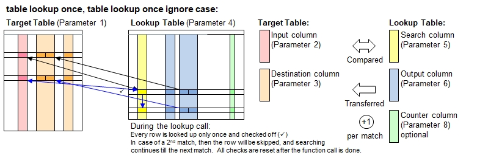

Function Names
table lookup once, table lookup once ignore caseDescription
This function works very similarly like table lookup(), with the only difference that every row in the lookup table can be be retrieved
only once and will then be internally marked as taken. Further lookups for remaining rows in the target table will skip the lookup table rows already taken.
The search time ratio versus table size n is O ( log(n)) ).

Call as: procedure or function
Restrictions
Indirect parameter passing is disabled
Parameter count
6 - 8 (For parameter description and return values: see table lookup() )
Examples
table load( lookup, "Examples/Table Lookup Example 1.csv" );
table initialize( target, { Town, Florence, Venice, Florence, Edinburgh, New York, Hamburg, Florence, Munich, New York } );
table copy table( target, t1 );
echo("Note: 2 matches in Florence, 3rd lookup stays blank. No matches in Venice.");
count[] = table lookup once ( t1 , Town, { Food or Beverage, Recommended, Row Number },
lookup, City, { Meal or Drink, Recommendation, '#row' }, true, Counter );
echo("Lookup table after 1st lookup, note the 'Counter' column added:");
table list( lookup );
echo("Target table after lookup (", count[], " items found):");
table list( t1 );
count[] = table lookup once ( target , Town, { Food or Beverage, Recommended, Row Number },
lookup, City, { Meal or Drink, Recommendation, '#row' }, ([Town]=Florence,Venice), Counter );
echo("Target table after lookup (Florence and Venice only) (", count[], " items found):");
table list( target );Output
Note: 2 matches in Florence, 3rd lookup stays blank. No matches in Venice.
Lookup table after 1st lookup, note the 'Counter' column added:
0 : City | Country | Meal or Drink | Recommendation | Rating | Counter
1 : Hamburg | Germany | Meal | Hering | 2 | 1
2 : Hamburg | Germany | Meal | Seafood | 3 |
3 : New York | USA | Meal | Pizza | 5 | 1
4 : New York | USA | Meal | Hamburger | 5 | 1
5 : Florence | Italy | Drink | Chianti | 4 | 1
6 : Florence | Italy | Meal | Tagliatelli | 5 | 1
7 : Edinburgh | G. Britain | Drink | Single Malt | 3 | 1
8 : Edinburgh | G. Britain | Meal | Fish & Chips | 3 |
9 : New York | USA | Drink | Lager | 3 |
10 : Camarque | France | Meal | Cheese | 3 |
11 : Camarque | France | Spice | Fleur du sel | 4 |
12 : Boston | USA | Meal | Lobster | 4 |
13 : Plzen | Czech Rep. | Drink | Pils | 4 |
14 : Munich | Germany | Meal | Pork | 3 | 1
15 : Munich | Germany | Drink | Weissbier | 5 |
Target table after lookup (7 items found):
0 : Town | Food or Beverage | Recommended | Row Number
1 : Florence | Drink | Chianti | 5
2 : Venice | | |
3 : Florence | Meal | Tagliatelli | 6
4 : Edinburgh | Drink | Single Malt | 7
5 : New York | Meal | Pizza | 3
6 : Hamburg | Meal | Hering | 1
7 : Florence | | |
8 : Munich | Meal | Pork | 14
9 : New York | Meal | Hamburger | 4
Target table after lookup (Florence and Venice only) (2 items found):
0 : Town | Food or Beverage | Recommended | Row Number
1 : Florence | Drink | Chianti | 5
2 : Venice | | |
3 : Florence | Meal | Tagliatelli | 6
4 : Edinburgh | | |
5 : New York | | |
6 : Hamburg | | |
7 : Florence | | |
8 : Munich | | |
9 : New York | | |